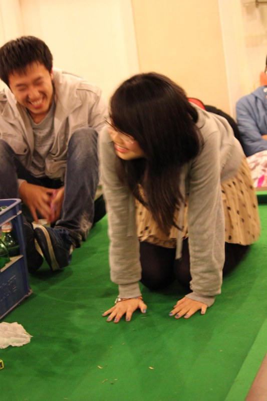
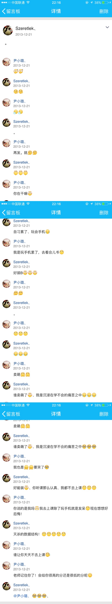

璐璐，祝你二十三岁生日快乐，你追了我半年，咱俩终于来到了一个年纪，不过在我眼里，你永远都是十九岁，因为，我认识你的时候，你就是十九岁。
从哪开始说呢，就从我第一次听你的名字吧。应该是军训的时候吧，开学的时候人多，谁也不认识，可能见过面，但是也没有什么印象了。有一次军训休息的时候，突然一帮人说树林里有好多信科的妹子，有个叫尹璐的，是个天津妹子，有为想追这个妹子，这是我第一次听你的名字，但是我一直都不知道到底是哪个。
如果说第一次对你的脸有印象的话，应该是军训刚回来，在哪个教室我不记得了，你们班的女生一个个从教室出来，我就站在门口，真的是一个个打量了一遍，哈哈哈，这是我第一次对你的脸有印象，可是我还是不知道哪个姑娘是尹璐。
当我第一次见到你的照片时，说实话，我觉得这个妹子脸怎么这个样子呀。不要打我，那应该是当时在生活部，好像是要办公交卡吧，机缘巧合下，你的照片就到了我的手上，这时候我才知道，这就是尹璐呀，朱有为看上的那个。
不过现在想想，大一上的时候真的是交集不多呢，记得跳国标的时候，朱有为第一个拒绝了江帆，点名要和尹璐跳，他这样做的结果就是最后他也没有个舞伴，哈哈哈。后来你的舞伴是刘奇，但是你好像经常不来训练，理由是胃疼？然后教练还是谁说，你学过舞蹈，跳得好学得快，应该问题不大，然后我记得最经典的场面就是刘奇每次来训练都是自己一个人solo，最后比赛他也没上场，不知道他当时有没有记恨你呢哈哈哈。
之后应该就是那次秋游了吧，应该是我第一次和你有正面的交流，而且你还给我留下了好印象。那时候大家都已经到别墅了，但是因为一个太挤两个没必要的问题，还有和老板搞价的事情，我去找老板商量了，一开始李阳还跟着，但是这个小逼当时才16岁，真的是没点用，我记得你当时还帮我说了几句话，给我一种称职团支书的感觉。然后就是那天玩了吧，我记得卓爷他们在打麻将，你好像在看？后来在屋子里斗地主，我记得好像是你我卓爷，不过好像没玩多久。之后就到了晚上，我在台球台上坐了一个晚上，主持玩游戏，真的是累死了，就这样我和你有了第一正式的交集，我让你爬到台子上学猫叫，我记得那次你穿着裤袜哈哈哈哈，也不知道当时想的时候，脑海里直接浮现了学猫叫这几个词，说了这么久怎么能没有照片，嘿嘿嘿！这应该是咱俩的第一次同框吧。
好像上学期的记忆到这就结束了，因为我从来不是那个喜欢主动和别人交往的人，所以上天就给了我们一个契机，那就是网球课啦。
我记得当时上网球课，每次你都和雨洁一块来，其实当时也没有啥，我和人都是慢慢熟起来的。我记得学期快一半的时候吧，我加了你的微信，但是好像一直都没有说话，因为当时对你的了解，好像是有一个中山大学的男朋友？所以都没有找你说过话，不过我记得有一天，你突然换了一个头像，我竟然主动找你说话，竟然是喷你的头像，哈哈哈哈哈，我记得当时我说你的头像像猪，你还记得么，那个带个帽子带个墨镜那张，刚好露着鼻孔，嘻嘻嘻。我记得最后考试的时候，是我陪你考的，当时好像已经对你和之前不太一样了，但是也不是特别深刻那种感觉，就是特别轻微的有一点好感？我记得当时还想找你吃饭，理由我都想好了，就是网球课的吃饭，不过最后好像也没吃，因为我根本就没说哈哈哈。
其实这学期还有两个小插曲，一个是有一次申请优秀团支部，你我李阳闫佳熠四个人，相约教室写材料，我记得当时我们班的我写，因为闫佳熠的字不好看，你们班的你写，等我看到你的字的时候，感觉自己被秒杀了，对，当时就是这种感觉，心里想，尹璐的字写的不错呦。
还有一次是智涵生日，他请客在西苑桥往东的一个饭店，我记不清什么名字了，当时你们俩媒体部，关系好像特别好，你管他叫儿子？吃饭的时候他坐你旁边喝酒，好像说到了什么，为了证明你俩的好关系，他还搂了你肩膀一下，我当时心里好像感觉怪怪的，对了！就是因为这件事，我就没说网球课吃饭的事情，我记起来了嘻嘻嘻。
就这样，大一的一年就过去，心里对你的一些小小的波动，貌似也被你和智涵的小关系打消了，嗯，就是这样的的。
之后就来到了大二，也就短短几个月吧，我们之间发生了太多太多，不过我感觉更多的是心境的变化，我就尽量仔细回忆按照时间来写吧。之后就来到了大二，也就短短几个月吧，我们之间发生了太多太多，不过我感觉更多的是心境的变化，我就尽量仔细回忆按照时间来写吧。
大二的第一个学期，就不能不说我的发型，记得考四级的时候，真的以为要过不了啦，当时就说，四级过了就去剪个光头，等到出分以后，查完我就去剪了，当时还在家学车，发了自己的第一条朋友圈，当时你就给我回复了呢，璐璐呀，记得你后来说，我的第一条朋友圈就有你了。说这个背景的原因呢就是，我感觉我大二上那个学期，丑了一个学期，也不知道你咋看上我的，哈哈哈。
今天是3月4号了，记得2号那天写日记说，我觉得1号那天晚上给你打电话语气不好是我不对，但是你说我有病直接把我电话挂了，想等你什么时候找我了我就跟你认错，并且肯定乖乖的，可是今天都四号都过完了，你都没有找我，我也说不清心里是什么滋味，今天去雨果那玩了，你好像之前说和室友要出去玩了，我看你走了挺多，也不知道是不是今天，这次，我真的不会找你了，等你什么时候找我了，我就给你道歉。算了，不说了，继续写啦。
那就还从大二上学期开始说起啦，记得当时开学的时候，大家一起去校门口照相，你和朋爷走在一起，我当时到了校门口还和你们说话来着，那时候感觉和你还没有和朋爷熟吧，不过那时候你们俩总在一起。
我感觉，你第一次主动找我聊天，大概就是选咱系换届选举的的时候吧，说起换届，怎么说呢，有遗憾吧，但是我从来不后悔，因为张彻刚进大些的那种为人方式，我从看见他的第一眼就烦，你知道是什么感觉么，就是那种一眼看到他的低级把戏的感觉，所以我军训时候对他就不感冒，他还专门给我发微信问我，是不是哪里得罪我了，不过这总是说不清孰对孰错的事情，刘思煌之前告诉我说，当时张彻和他说，郭冬冬是他最大的竞争对手，我听了也只是笑笑，毕竟从效果来看，大学我和他，从目前的效果，我算是败了，虽然现在有时也会逼自己去做一些不太喜欢的事情，可是心境和以前，也着实不一样了。呀呀呀呀，跑题啦，对不起啦，赶紧拉回来。
那就从冬哥后援会说起吧，记得当时在422做竞选初选的时候，我在上边说，我叫郭冬冬，你应该还记得那个音吧，第二个冬是轻声，由此，便有了你第一次主动找我聊天的理由，后来便有了冬哥后援会，关于朋爷的印象基本没有了当时，我感觉她只是你当时拉的挡箭牌吧，后来竞选没选上，你晚上安慰我，我装作无所谓的样子，其实心里还是有些小失落的，但是我并不后悔什么，你知道我的，从不后悔。
后来了得好像就慢慢多了起来，我记得更多的是你找我吧，大概两三天一次的频率，后来我慢慢也找你了，不过当时确实感觉不深，因为你白天时的一些小举动，都可能改变我心中刚刚萌生的想法。记得当时你和雨果挺熟的，他总叫你麻花姐，我记得有段时间h爱总聊，有次晚上上课，你好像买了星巴克，还给雨果买了一杯，当时心里竟然有一种很不爽的感觉，可是又不能怎么表现出来，所以自己能做的，就是不找你聊天，或者和你聊天的时候更加冷淡一点，没办法呀，当时我的就是这么变态，那应该算是第一次不算吃醋的吃醋吧。
再然后说点什么呢，那就说说秋游吧，大二换了班长，组织了一场还算无聊的秋游，不过那次秋游，又给我们两个人间，增添了联系在一起的纽带，那就是麻将。其实我记得当时自己就有一种想接近你的感觉了，但是我从来不是 喜欢主动的人，所以我接近的方式就是和你身边的人产生交集，比如你喝朋爷在一起的时候主动和朋爷打个招呼，比如你和卓爷在一块的时候，去和卓爷说几句话，现在想想挺变态的，不过自己内心真的是有很多小细节呀，感情真的是一个很复杂的东西，包括我现在，我也不确定自己是不是能完全写出自己内心的想法。然后是那次秋游打麻将，你不会打，我就很主动的做到了你的旁边，我记得当时我先自己打了几盘，给你演示了几把，好像是没输过，后来你坐那我在旁边教你玩，记得当时雨果偷拍咋俩的照片么，我就记得我当时贼丑，穿着你最讨厌的绿色外套，记得那次玩完，自己好像更加想靠近你了些，后来拍了照回去的时候，我其实挺想和你走一块聊聊天的，可是你跟着孙总走了一路，我又不爽了当时，可是又不能跟谁去说，我能做的，就是压迫自己对你的好感，真的，对我来说，当我对一个人有一点点感觉时，别人一件细微的事，就会打消我的念头，而且是自然而然的，不是我去刻意做的，所以那次回去之后，我又压下去了自己对你的小热情。当然打麻将还有后续啦，最后好像聊的不多了，当时你们周二晚上的时候，好多人都有一门国学经典导读，突然有那么一天，你就找我打麻将了，当时还有卓爷，受，江帆，李阳，佳杰，雨潇，小玉，大概是两桌吧，记得不是太清楚了，在学校后门，玩了大概两个小时，当时你还不是很会玩，好像还是咱俩一起玩，你玩着，我看着，后来大家一起去沙县吃了东西，记得回来的时候特别冷，我好像还故意挤着你的肩膀取暖来着，这算个转折吧，就像是两个人的感情开始生根发芽，进入了成长的阶段。

之后好像聊天会更加频繁了，算是感情积累的过程吧，我就和你说一些当时我自己因为内心波动，对我行为影响的一些小细节，对，你的冬冬永远是一个细节控。先说上课吧，当时你总和朋爷一块去上课，你有没有发现，经常上课的时候，我就坐在你的附近，有时候在你前边，有时候在你后边，有时候在你旁边，其实我都是有意无意故意的，我最喜欢坐在你的前便，因我一直是一个很害羞的人，所以我当时就很不好意思去主动找你说话，但是我要是坐在你前边，我就可以通过我自己的方式，制造一些话题，去吸引你的注意，让你主动去找我说话，当然了当时还有朋爷，吸引了朋爷，你就自然过来了，是不是很聪明。记得当时有一次在教学楼哪个教室，你和王思琪在我后边坐，我们当时在看一个动图集锦，当时其实没有那么好笑的，但是当时为了吸引你的注意，我就故意笑的好大声，现在想想自己当时好呆萌，哈哈。我记得当时每次碰到你和朋爷在食堂，朋爷总会撇撇眼说呦冬哥，你也会学着她的调调说一声冬哥，一切都这么自然而然的发生着，你在我这种下的那颗种子也已经慢慢发芽，虽然可能我当时还没有意识到自己对你有那种想法，更多的可能是一种吸引吧。
今天是3月5号，这么多天了，你也没有找过我，被我猜中了，你今天的确和室友出去玩了，我也是半夜朋友圈翻到的，那时候是两点多吧，凌晨，我睡醒就翻手机，那时候你刚发了四分钟，然后我就继续睡了。你知道我的，我一直关心你在英国的一举一动，之前明着问，后来你烦我了，我就自己默默的关注你，不知道从什么时候起，我已经养成了一个习惯，每天晚上都会莫名其妙的醒，或是一两点，或是三四点，更多时候会醒好多次，我会翻你的朋友圈，翻你的微博，翻你的ins，把手机时间改成伦敦然后看你的微信步数，我自己都觉得变态，但是可以说今年以来吧，我从来没有因为看到的东西发表什么看法或者找事什么的，我晚上就是想看看你，单纯的，默默的，看看你在干嘛，也不想让你知道，可能是我下决心少联系你以后，每天对你思念的延续吧，好像每天晚上凌晨醒来的时候，是我最想你的时候。那天和你视频态度不好，就是最近看见了好多你们俩的事，微博ins互动，朋友圈看不到， 应该也不少吧，一起吃饭玩的时候，你总是坐他旁边，有一天你ins，tag了他，我想着你们俩还一起做东西，越想越不开心，才发生了那天的一幕，我那天晚上就做好了给你道歉的准备，可是你到今天也没有找我，这么多天过去了，我还是不准备找你，给自己留一点自尊吧，等你来找我我就和你道歉。其实这几天我也想通了，感觉自己挺逗的，为了这么个人吃醋，我从这个人的说话措辞，微博转载，生活习惯，照片什么的，大概了解了这个人，我是连这点自信都没了么，我怎么想都想不出来，这个人怎么看都比我次吧。不过后来想想，万一你需要的仅仅是个陪伴呢，我不知道，真的，我现在对你对我的感情，一无所知，我没有这个自信，但是我也不想再和你提这件事，倘若你真的那样做了，我也没什么可后悔的，我现在每天过得很充实，学习运动，做一些本科没有做到的事，一些有意义的事，让自己忙起来，就算你真的不在了，我只会是更加优秀的郭冬冬，我不光要看着好看，长得帅，我还要做一个情商高会做人会办事的郭冬冬，我还要做一个会学习能做项目能搞科研的郭冬冬，我还要做玩啥都会，放那哪行的全能郭冬冬，我更要做身材好会打球体力好耐力佳的郭冬冬，是啊，我还有这么多有意义的事情去做，竟然会吃一个莫名其妙人的醋，我也觉得自己脑子进水了，就算你真和别人在一起了，也许不是这个人，我可能也不会和你吵和你闹了，就像你说的那样，在better me的路上，总会有更多的better you。今天爬山，从八点上山，一刻没停，下来就三点半了，很累，也很充实，就是今天自己在山上的时候突然明白，为什么要去纠结一些小事呢，有那么多有意义的事情可以去做。

然后就发生了雨果那件事。大概是十一月下旬吧，记得当时我们正属于平稳进展的时期，然后就是这个b，不知道哪次偷偷看见了我在和你聊天，就美其名曰要撮合咱俩，我也不知道他是故意的还是怎么滴，每次都越帮越忙。记得是彭爱东的课上吧，反正是在学交上的课，那次我好像坐在最后一排，然后上着课雨果就去和你bb了，反正我就看着，装作不知道，心里反正是抗拒的，但是又好像有一点点期待，毕竟万一你同意了或者是怎么样，心里还是有一些期盼的吧，然后雨果回来说你给我发了好人卡，我当时心里就想，你特么这样去问人家，是个人就给我发好人卡，妈蛋。但是因为自己当时的性格，自然也只能当真了，于是那天之后就没在主动找过你，而且出奇的一样的是，你也没在找过我。但是也就是那个时候，自己慢慢的，好像会想起你来，有种想和你聊天的冲动，大概就是当时的情愫萌动吧，但是当时我就是那种宁可心里藏着也不会去主动的人，就这样憋着，一直憋到了那一天，说起来，还是要感谢朋爷。
6号，早上醒了，你不知道我每天早上有多么期待你给我打过来的视频，之前下了多大的决心，这次绝不找你，可是自己还是食言了，怎么说的，对你我总是如此。前不久，初恋加了我的微信，我一直没弄明白到底加我是为了什么，后来聊了几次，先是说自己快结婚了，让我去参加婚礼，然后又说当时莫名其妙分手连个理由也不给她，说自己因为我五六年没谈恋爱好好学习然后遇到了她现在的男朋友直到现在，说她现在变得更漂亮了问我有没有后悔，我说没。后来她一直说我当时是多么的狠心，可以一天三四十个未接来电都不接她电话，我可以一句话不说分手从此消失在她的世界，后来想想，当时的自己，真的是一个带刺的少年，无知又懵懂，身上满满的都是缺点，可能除了她告诉我唯一的优点，就是当时长了张好脸蛋吧，一晃十年就过去了，我也早已不是当时我的了，我也学会了如何去关心一个人，但是我记得我遇见你之前，至少对感情这件事，我是有自己的决绝的，但是现在在你这我真的好迟疑，我不知道该不该坚持，今天你对我的态度，让我更加心冷，仿佛一切都是自己的一厢情愿，其实之前你总找我陪你睡觉，我其实挺开心的，因为让我感到我在你心里的位置，我可以不找你，你白头想干嘛干嘛，但是我想要的只是适当的分享，想我的时候，能跟我视个频让我知道，我和你说过，你想和我视频，我一天24个小时等着你。今天你的态度特别不好，我真的不知道该怎么描述，半天不回我微信，说你困了，然后又不睡，我不想去猜你在干什么，我只知道，你这样做。。哎，我今天和你发，你就这样吧，自己作的，别后悔。真的，璐璐，我不是一个不求回报只会在你身边不管你心里有没有我都会默默等着你的人，每发生一件事，你可能都会把握推得更远一些，如果真的有那么一天，我坚持不下去了，不要伤心，这都是我们两个自己走出来的路，记住郭冬冬吧，一个在你最美好的年龄，深爱过你的人。
总算写到故事精彩的地方了，我记得那是十二月21号吧，当时我在图书馆自习数据结构，当时两个人已经好久没有联系过了吧，当时心里已经有一种想去靠近的感觉，可是当时的我总是那么不愿意去主动，不好意思和你发微信，就只好瞎翻你的一切，于是便有了qq空间的留言，可我没想到的是你特别快就回我了，怎么形容当时的心情呢，有点小激动，也有点小开心，但是只是心里的感受，甚至我自己也才刚刚捕捉到当时，空间回了两句以后，你就直接给我发微信了，我现在还记得你当时发的话“冬哥+两个大哭的表情”，后来你说你和朋爷闹矛盾不说话了，我记得我把我对你的想念，全部用来劝和你和朋爷上了，就那几天就聊了挺多了，有一种拨开云雾的感觉，但是我还是不太明白自己的心里到底怎么想的，一直到了那天。你还记得么，13年的那个平安夜，我和你聊天，聊了一夜，到五点吧，真的，感觉有说不完的话，也就从那一天，我在和你聊天的时候，我看着你的头像，总有一种很熟悉的感觉，仿佛穿越了时光回头看那样，我想，这个人，肯定会和我在一起，成为我的老婆。后来就的确被我言中了，可能我们还没有走过第二句，但是当时我真的就这么想的，用你的话来说，迷之自信，我就感觉你会和我在一起，其实这种感觉早就有了，打麻将的时候就有了，只不过经历了那个夜晚，我才逐渐坚定下来，我现在还记得我们俩那天晚上聊的什么呢，那天我们聊的是星座，你发给了我一个文章的截图，我们俩就我的性格和处女座的性格聊了好久好久。那天之后，一直到放假，仿佛每天聊天，都成了一种习惯。
记得那个考试周，我几乎每天都和聊天，期待着咱俩都能考的还可以，回忆里的时间才是过的最快的哈哈。我记得当时对你，已经有了那种想在一起的感觉，聊天的时候也会时不时的暗示你下，当时那个有尽的截图，友谊走到了尽头，开始了一段全新的感情，还记得我发你这个定义的截图，我记得我当时总问你，璐哥，你啥时候跟我友尽呢，你就总是装傻半推半就就过去了，不过我当时好像挺享受这种感觉的，那种快要在一起的感觉，就在这种氛围下，我们大学里最奇妙的一个学期就这样过去了，我记得我走的那天，专门发了个朋友圈，我说我也走啦，然后是吐舌头的表情，那天很多人都以为我只是随便发个走了的心情，其实只有我知道，我就是对你说的，因为你最喜欢我吐舌头的样子呀，就像寒假在家，你每天让我发你一张吐舌头的自拍那样，我的舌头，只为璐璐吐，略略略～还记得这三个字么？（好气呀，我还是要回来加了几句， 昨天写的时候，找了那个寒假吐舌头的照片，专门做了个拼图，还没写就先微信发给你，我是晚上十点多发你的，可是现在已经第二天早上九点了，快十二个小时了，你连微信都不回我，好歹告诉我已阅吧，真的是无语了，昨天写的肺腑之言，感觉又写错，哎，只希望你是不想理我，别出什么意外就好。）

今天，像往常一样半夜醒来看手机，两点的时候没有任何信息，于是就又睡了，五点醒了，看到一个消息，真的是没想到是你，你发了一张网页的截图，网址是我当时用river做背景音乐的那个域名，后来被我用作项目的域名了，因为当时做了以后觉得你并没有什么反响，就把它覆盖了，没想到你竟然还会再打开它，这是我白天才睡着的，记得回你的时候还在想，你没事看我项目干什么，后来想想才想明白，真是笨死了。不过后来我就赶紧和你视频了，久违的感觉，你还是那个璐璐，我还是你的丁丁酱冬冬酱，我甚至现在都已经记不起来我们早上说了什么，但是有一点我还记得，那就是被在乎的感觉，真好。今天晚上开会，做了一个多小时的presentation，60多张ppt，现在晚上想想，简直是活干完了，心情也好了，谢谢你呦，虽然我极力的去让自己改变，但是你总是可以轻而易举的左右我的情绪，这样真的不好呀，也不知道什么时候可以做到，我想做一个没有心里软肋的坚强的男人，不给别人伤害我的机会，我以前一直是这样做的，也不知道什么时候可以重新找回自己，不过还是谢谢你的在乎，我真的是很开心呢！
然后就是寒假在家了，一些很细节的事好像都回忆不起来了，我就记得那阵子总和你聊天，还总是找机会贱贱地问你，璐哥你啥时候跟我友尽呀。终于在一天晚上，我不知道是你被我的言语炸弹所击晕，还是我们的感情自然而然的发展水到渠成，还是我踩了狗屎所以走了大运，又或者是你刚好那天不清醒，稀里糊涂的就被我骗走了，我不知道，我想，你也不知道吧，感情，就是这么奇妙的东西。咱俩因为纪念日的问题，还争论过好久，我说是140116，你说是15，我后来想了想，事实好像是这样的，14号那晚聊天，我算正式表白？其实也不算，我就是日常贫嘴，想着你哪天说不定就答应我了呢，可是那天你突然变的好严肃，就像是我的一次次尝试，终于敲开了你的心门，我现在还记得，你突然问了我好多问题，关于我的人生规划，关于我的前程梦想，关于我的未来，当时真的是第一次被问到这些问题，我记得我当时在床上时还专门做了起来，好好的思考了这个问题，然后告诉你，聊到了15号的清晨，然后你告诉我你要好好想想，让我三天别联系你，我说好。然后15号一天白天，我都没有找你，晚上睡觉，到了16号凌晨，你就给我发了note里写的话，是的，你同意了，你答应我了，你要做我女朋友了！我已经记不起来我当时有多开心多激动了，我至今还记得你那个上面最后说，你从来不知道怎么去关心，去爱一个人，但是和我在一起了，你回去学如何爱一个人。我当时保存了那个图片，是16号凌晨一点多，所以我才一直是我们的纪念日是在16号，可是，我竟然弄丢了那几张图片，记得大四的时候我有次装系统装错盘了么，覆盖了我的照片，别的照片我一点都不心疼，当时我想起来的，就只是尹璐同意和我在一起时写给我的话，丢了真的是好可惜。但是，不管怎么样，我们俩终于在一起了，不管是机缘巧合，还是命中注定，不管是人生插曲，还是相伴终老，我们终于跨出了我们的第一步，有了开始，就有了1，有了属于我们的1，我们才可以继续我们的旅程。写了这么多天，终于把我们俩写在一起啦，哈哈哈哈哈，其实我还没想好怎么去写我们在一起的日子，因为再以后两年半的大学时光里，你就是我的世界。
停了两天没有动笔，经常会突然脑海里浮现出一些东西，关于我们的点滴，你最近都不找我了，我也不想去找你，但是我一直不知道自己这样做是对还是不对，不找你，怕两个人慢慢适应，适应那种人不在身边，连常联系的必要都没了生活，你已经走了半年了，虽然我可能不知道我们最好的相处方式是什么，但是我知道，这一定不是我们正常的相处方式，之前你你还常找我，给我评论给我点赞，最近都不会了，可是我却没有以前那么在意了，每当你对我很冷淡的时候，我总是迟疑，我总会想，我这样等你，你我想要的生活么，或许你根本不稀罕呢，我也不知道，可是每当你找我让我陪你的时候就没有这种感觉，现在自己的情绪真的常常反复，尤其是对你，只是你从来不知道罢了，言归正传，生日礼物还是要送，说到礼物这个东西了，我送别人东西，一直都喜欢送有心意的，因为我觉得 那种钱买来的，是个人都能送，没有什么意义，或许以后我赚钱了，送你万把块的礼物可能才有不同的心境吧，我的初衷是这个算我的心意，生日的时候看你喜欢啥再给你买，可是最多也是给你打钱，其实就算送礼物我还是比较喜欢送你兔子那种方式，至少，会有一种收到礼物的惊喜的感觉吧。还有一点就是，我这个，从来都是对别人大方对自己小气，如果我感觉到一个人的好，送多少钱的我也不会心疼，可是你却总是相反，你总是对自己大方，对别人小气，当然也包括我，记得当时有次和你吵说你，你才给我买了洗面奶当情人节礼物，其实我看重的不是送不送礼物，看重的是那份心，心里有我，花多少钱送你礼物我都乐意，总感觉说这个不太好，你又该说我斤斤计较了，虽然对你我心里都是特别乐意的，可你那样的次数多了，总会引起我的一些，可能是本能地抗拒吧，这次呢，就看你最近表现啦，表现好了就给你买个不错的礼物，要是你对我还是爱答不理的话，那就算了吧，当一个人心里没有你的时候，也不是一件礼物就可以挽留的，就送份回忆给你吧，至少，不管你最后和谁在一起，这都是我们共同经历的，在我们人生最美好的年纪，属于我们两个的回忆。